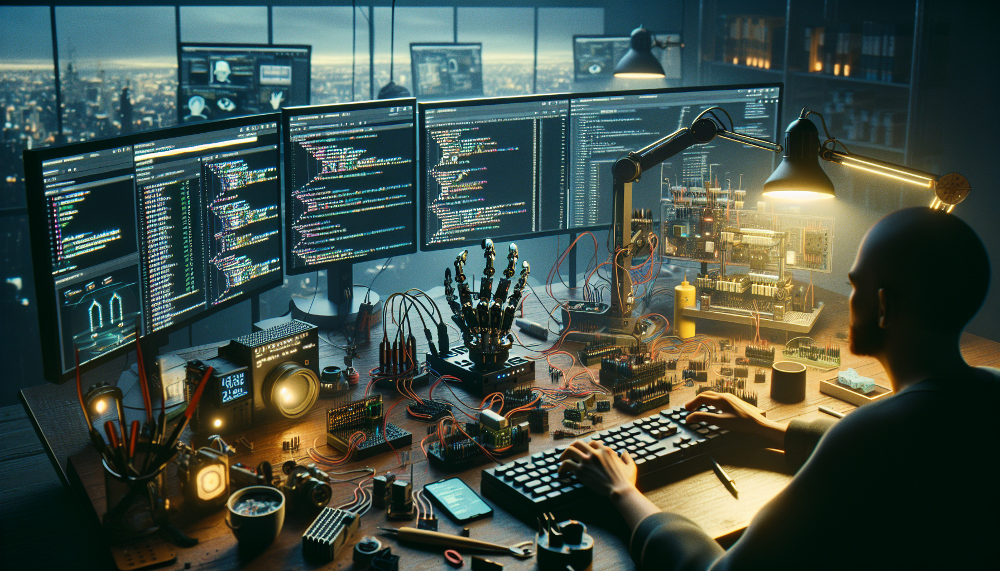

OpenClaw started from a feeling I think a lot of developers and makers know well: the gap between what looks possible in demos and what is actually usable when you try to build it yourself. There are plenty of exciting robotics clips, AI experiments, and open-source repos online, but once you get into the details, things often fall apart. Documentation is incomplete. Hardware assumptions are hidden. The software only works in one setup. Reproducing the result becomes a project of its own.
I built OpenClaw to close that gap.
At its core, OpenClaw is an open, hackable build that combines software, hardware thinking, and practical experimentation into something developers and makers can actually understand, modify, and run. It is designed to be transparent, reproducible, and builder-friendly from the start. Instead of treating the project like a polished black box, I wanted to expose the real process: the architecture, the tradeoffs, the failures, and the small decisions that make a system usable in the real world.
This post is the behind-the-scenes version of the project story: what OpenClaw is, why I decided to build it in public, and what I hope other developers, AI enthusiasts, and hardware tinkerers get from it.
OpenClaw is an open-source build centered around the idea of a claw-like robotic or interactive system that developers can inspect, extend, and adapt. Depending on how you approach it, OpenClaw can be seen as a robotics project, a software architecture experiment, a GitHub-first open build, or a platform for testing AI-driven interactions.
The important part is not just the physical mechanism. It is the full stack around it:
I wanted OpenClaw to feel approachable to software developers who are curious about hardware, and equally interesting to makers who want a cleaner software backbone for their builds. That intersection matters. Some projects are mechanically impressive but hard to program. Others are technically elegant in code but disconnected from physical reality. OpenClaw is my attempt to bring those worlds together in a way that is practical and open.
The reason OpenClaw exists is simple: I was tired of seeing promising projects that were impossible to reproduce without guessing half the setup. If you have ever cloned a repo, opened the README, and immediately realized the real instructions were missing, you know the problem.
In robotics and maker projects, this problem gets worse because every layer introduces friction. Hardware varies. Parts are swapped. Firmware changes. A library version breaks something subtle. Then AI gets added on top, and now the system depends on prompts, model choices, APIs, and runtime assumptions that are rarely documented well enough.
What bothered me was not that these projects were imperfect. That is normal. What bothered me was how often the useful middle layer was missing: the explanation of why decisions were made and how to adapt the system when your setup is slightly different.
So OpenClaw became a response to that frustration. I wanted to build something that showed the whole path, not just the final screenshot. The GitHub repo is not just there to host source code. It is part of the product. The commit history, the structure, and the documentation are all meant to help someone else follow the logic of the build.
There is a big difference between building a project privately and building one openly on GitHub. In private, you optimize for speed. In public, you optimize for clarity. You have to name things better. You have to separate experiments from reusable components. You have to explain assumptions. You have to decide what belongs in the repo and what belongs in your head.
I chose to build OpenClaw in the open because I wanted accountability and usefulness. Public builds force discipline. If I know someone else might try to use the code, I write it differently. If I know someone might fork the design, I think harder about modularity. If I know someone might contribute, I try to reduce ambiguity.
There is also a deeper reason: open building creates better feedback loops. Developers notice architecture issues. Makers spot practical hardware constraints. AI enthusiasts suggest new interaction models. The project gets sharper because it is exposed to different ways of thinking.
That kind of collaboration is hard to manufacture after the fact. It works best when the project is visible early, while the design is still flexible. OpenClaw is not just open source because that sounds good. It is open because the project itself improves when more people can inspect, question, and build on it.
From the beginning, I had a few principles for OpenClaw that shaped how I approached both code and build decisions.
That may sound obvious, but in practice it changes everything. It affects file structure. It affects naming. It affects how demos are presented. It even affects what features not to add yet.
One of the easiest ways to kill momentum in an open-source build is to make the first interaction too complex. If someone lands on the repo and cannot understand the moving parts, they leave. If they cannot identify a clear place to modify the project, they watch from a distance instead of participating.
So I treated OpenClaw as a system that should invite exploration. The architecture should show where perception lives, where control lives, where hardware integration happens, and where AI-based logic can be plugged in. Even if a user never builds the exact same version I did, they should be able to borrow the patterns.
AI is part of why OpenClaw feels timely. We are in a moment where software builders increasingly want to connect intelligence to physical systems, but the path from model output to real-world action is still messy. There is a lot of hype, but not always a lot of usable implementation detail.
OpenClaw gives me a place to explore that boundary honestly. What does it actually take to connect AI reasoning, perception, or instruction parsing to a system that has to move, react, or manipulate something? Where does AI help, and where does deterministic control still matter more? How should a system fail safely when the smart layer is uncertain?
Those are the questions I care about. Not AI as decoration, but AI as a real design constraint inside a build that has software and hardware consequences.
For developers, that means OpenClaw can serve as a practical reference point for integrating modern AI workflows into interactive systems. For makers, it shows how to think about AI without turning the build into a fragile demo. For me, it is a sandbox for testing ideas in a way that stays grounded.
One of the best parts of building OpenClaw has been how quickly reality exposes weak assumptions. A feature that looks elegant on paper can become annoying when tested physically. A clean architecture can become too abstract for practical debugging. A simple setup step can turn into a blocker if it is under-documented.
That process taught me a few things.
It also reminded me that authenticity matters. Builders can tell when a project is presented as if every step was obvious from the start. That is rarely true. OpenClaw exists because I wanted to show the real process, including the rough edges. I think that makes the project more useful, not less.
I do not think OpenClaw matters because it is the biggest or most advanced project in its category. I think it matters because it tries to be legible. In a world of impressive but opaque builds, legibility is valuable.
If you are a developer, OpenClaw is a chance to step into hardware-connected systems without feeling like you need to decode someone else’s undocumented setup. If you are a maker, it is a way to see software architecture treated as part of the craft, not just an afterthought glued onto the build. If you are interested in AI, it is a practical environment for exploring how intelligence layers interact with real systems instead of toy examples.
That combination is the reason I kept going. I wanted to build something that could be useful beyond the initial prototype. Something forkable. Something inspectable. Something that invites someone else to say, “I can build on this.”
OpenClaw began as a personal response to a common builder problem: too many exciting projects are hard to reproduce, hard to understand, and harder to extend than they should be. I built it to create a more open, practical path from idea to implementation. Not just a demo, but a real build with source code, structure, and room to evolve.
For me, the project is about more than a claw mechanism or a single repository. It is about building in a way that respects other builders. Showing the work. Sharing the code. Leaving enough context behind that someone else can actually use what you learned.
If that resonates with you, then OpenClaw is for you.
Follow the OpenClaw build on GitHub and see the full source code.